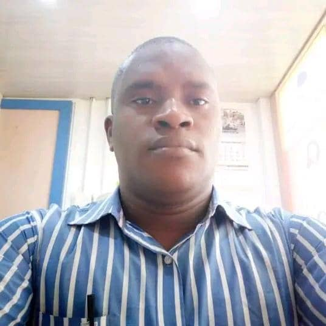

Bassey Emmanuel
About

I am Bassey Emmanuel, from Akwa-Ibom State, Nigeria. I am a student of BYU-Idaho currently studying software development. I love traveling, cooking, sporting etc.
Lagos, Nigeria

"Nigeria is a country in Africa, bordered by Cameron, Niger, Benin, etc. and is best known for its oil rich reserve and great historical sites like Ife, the ruins of a medieval stone city. With Abuja as its capital and around 200 million people speaking over 50 official languages. Nigeria is culturally diverse and resilient. Formerly called Nigeria, it gained independence in 1960 under Dr. Nnamdi Azikiwe. Today, its economy relies on oil production, agriculture and mining, while jollof rice, a rice-based dish, remains the staple food. Despite political and economic challenges, Nigerians are celebrated for their optimism, hospitality, and strong sense of community.."